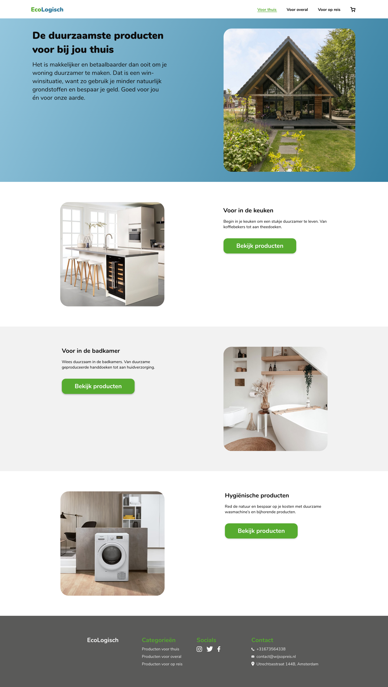

Voor het vak Grid en Kleur was de opdracht dat ook om een website te maken voor producten met een hernieuwbare waarde voor de gebruiker. Ik heb gekozen om een website met producten die jezelf in je huis en op reis kan gebruiken om duurzamer te leven. Op de website vindt je verschillende categorieën, filters en productpagina’s.
Naar PrototypeMoodboard
Hieronder zie je mijn gemaakte moodboard voor mijn prototype. Ik ben bij mijn onderwerp een sfeer gaan bedenken die ik wilde toepassen bij het maken van mijn prototype. Tijdens het maken kwam ik erachter dat ik niet alle kleuren op een goede manier kon gebruiken in de interface, maar wel in illustraties en foto's.
Schermen prototype
Hieronder zie je de uitgewerkte schermen van mijn prototype. Ik ben eerst begonnen met het maken van wireframes om de plaatsing van elementen te bepalen, hierna ben ik content bij elkaar gaan zoeken/schrijven om zo de wireframes om te zetten in een prototype. Tijdens het maken van het prototype ben ik meerdere keren van opmaak/onderwerp veranderd omdat ik merkte dat het idee wat ik in mijn hoofd had of niet werkte of niet lukte om te animeren. Ik heb bij dit vooral geleerd hoe belangrijk het gebruik van een grid is. Eerst deed ik de vormgeving echt op gevoel en kwam dat er ook goed uit, maar met de ondersteuning van een grid klopt het visueel gewoon beter en doordat je al een soort basis hebt lukt het ook om sneller je design neer te zetten.
